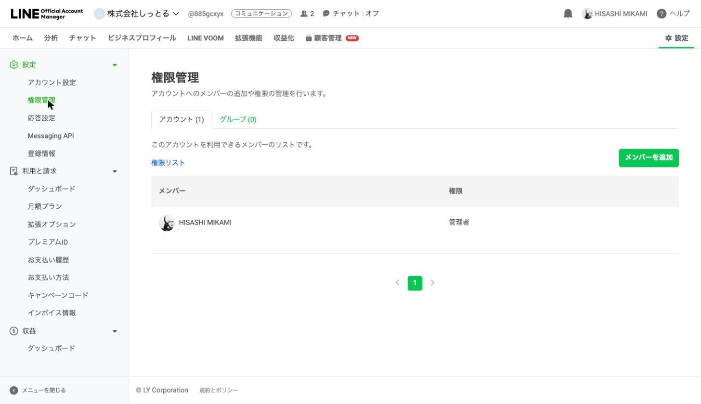
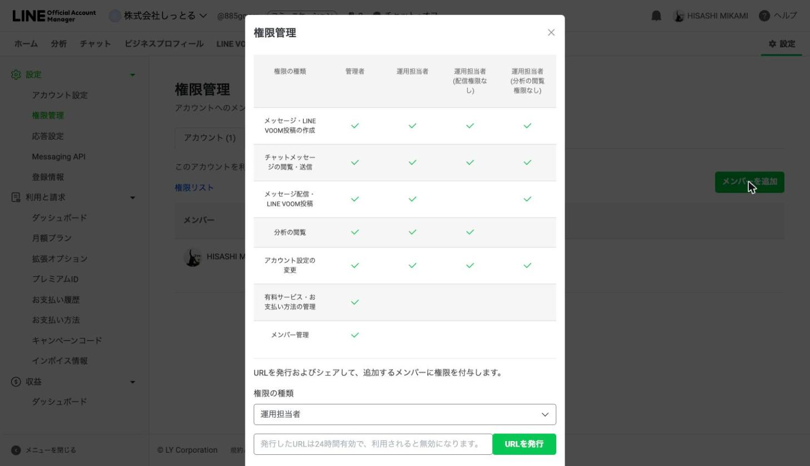
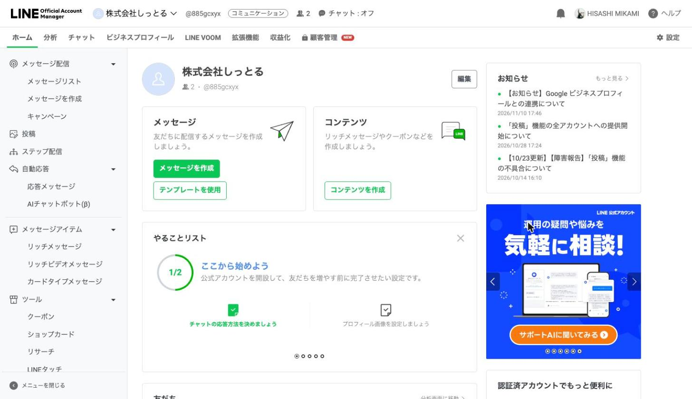
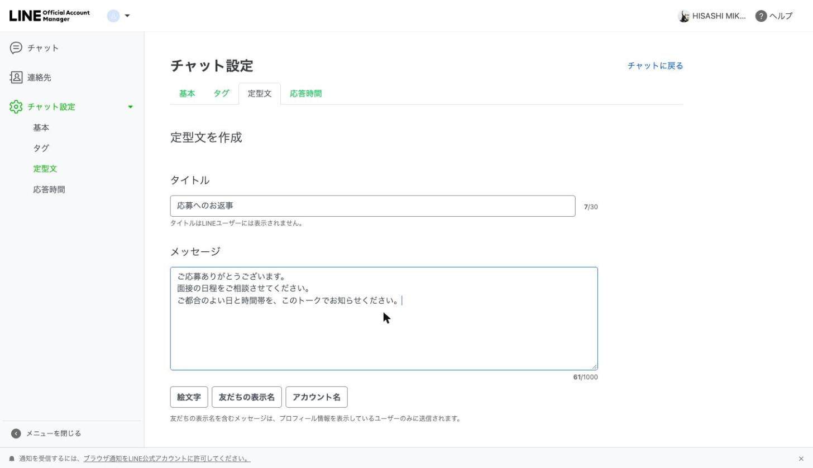
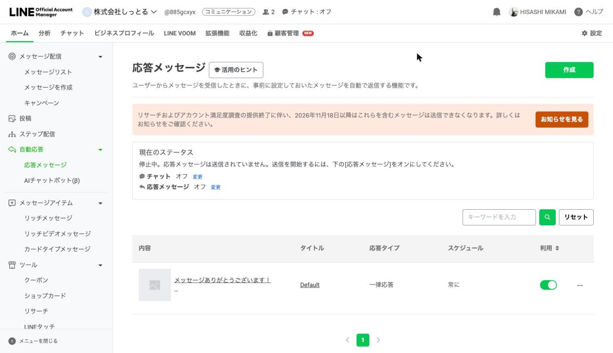
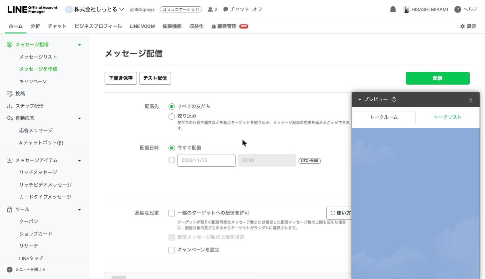
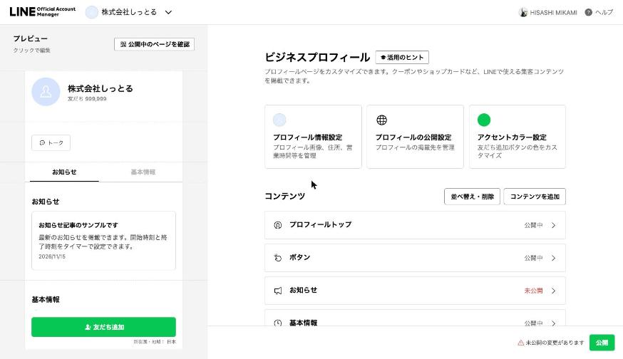
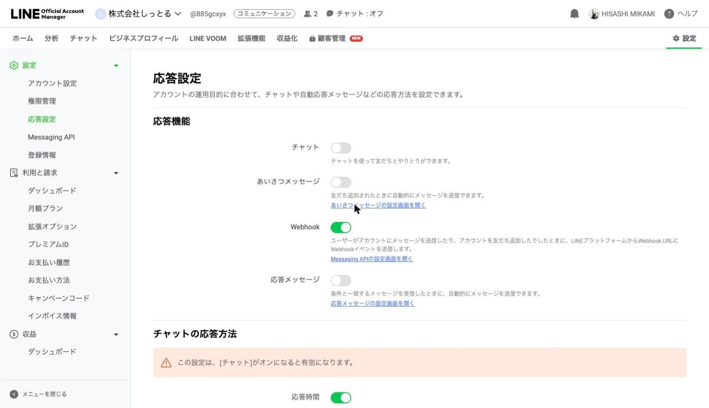

株式会社しっとる
公式LINE ご利用ガイド
お申し込みから納品まで、納品したあとの使い方 最終更新 2026年11月16日
公式LINEの構築をお申し込みいただいた皆さまへのご案内です。当社が作るまでの流れ、お客様にお願いすること、納品したあとの使い方をまとめました。
分からないところがあれば、画面のスクリーンショットを当社とのLINEに送ってください。画面を見ながらご案内します。
印の見方 お客様 お客様にお願いすること 当社 当社が行うこと
1. 全体の流れ
1
ヒアリングフォームに記入お客様
お店の情報・写真・ロゴを、フォームから送っていただきます。
2
構築案とご確認のお願いをお送りします当社
あいさつの文・メニュー・自動の返事の案と、教えていただきたいことの一覧をLINEでお送りします。
3
ご確認・ご回答お客様
分かるものからで大丈夫です。直したいところは、言葉で送っていただければ当社で直します。
4
アカウントの準備と、中身の入力当社
公式LINEをお持ちでない場合は当社で作ります。お持ちの場合は、当社を「管理者」として招待していただきます（2章）。
5
スマートフォンで確かめていただくお客様
友だち追加して、届く文やメニューを見ていただきます（3章）。
6
納品当社
友だち追加のURL・QRコードと、管理画面に入るための招待URLをお送りします（4章）。
7
お店での運用お客様
届いたメッセージへの返信や、お知らせの配信を行っていただきます（5章から）。
2. 始める前にお願いすること
お店ですでに公式LINEをお持ちかどうかで、お願いすることが変わります。
公式LINEをお持ちでない場合
アカウントは当社で作ります。次の2つを教えてください。
- 管理していただく方：メッセージが届いたときにお知らせを受けて、返信する方です。その方のLINEに招待のURLをお送りします。
- アカウントの登録に使う会社名・所在地：お申し込みの内容と同じでよいか。
公式LINEをすでにお持ちの場合
今のアカウントをそのまま使います（友だちもそのままです）。当社を「管理者」として招待してください。
スマートフォン（「LINE公式アカウント」アプリ）
- アプリを開き、お店のアカウントを選ぶ
- 右上の「設定」（歯車のマーク）を押す
- 「権限管理」→「メンバーを追加」を押す
- 権限は「管理者」を選び、「URLを発行」を押す
- 「URLをコピー」を押し、当社とのLINEに貼り付けて送る
パソコン
- https://manager.line.biz/ にログインし、お店のアカウントを選ぶ
- 右上の「設定」→ 左の「権限管理」→ 右の「メンバーを追加」
- 権限の種類を「管理者」に変えて「URLを発行」→ 出てきたURLを当社とのLINEに送る

画面1 パソコンの「設定」→「権限管理」。右の「メンバーを追加」を押します

画面2 権限の種類は最初「運用担当者」になっています。「管理者」に変えてから「URLを発行」を押してください
ご注意
- 招待のURLは、発行から24時間で使えなくなります。発行したら、その日のうちに送ってください。
- 「権限管理」や「メンバーを追加」が出ないときは、お使いのLINEが管理者になっていません。アカウントを作った方（オーナーの方や前の担当の方）にお願いしてください。
- ほかの配信ツール（Lステップなど）をお使いの場合は、先に教えてください。切り替えると、そのツールが止まることがあります。
- 今お使いのあいさつ・自動の返事・メニューを残したい場合も、先に教えてください。入れ替える前に、今の内容を控えてからご相談します。
3. できあがったら確かめていただくこと
当社から「できました」とご連絡したら、お手元のスマートフォンで次を確かめてください。
- 友だち追加のURLを開いて追加すると、すぐにごあいさつが届く
- トーク画面の下にメニューが出て、押すと案内が返ってくる（リンクのボタンは正しいページが開く）
- 「営業時間」など、よく聞かれる言葉を送ると自動で返事が返る
- お店の名前・住所・電話番号などに間違いがない
- 言い回しで気になるところがない
直したいところは、どの文をどう変えたいかを言葉で送ってください。当社で直します。
すでに友だちになっている方へ：あいさつと、友だち追加のあとに届く案内は、これから友だち追加した方にだけ届きます。今の友だちには届きません。今の友だちには、新しくなったことをお知らせする配信を、ご希望に合わせて下書きでご用意します。
4. 納品のときにお渡しするもの
| 友だち追加のURL | お店のLINEに友だち追加してもらうためのURLです。Instagramのプロフィールやホームページに載せられます |
| QRコードの画像 | 店頭のポップやチラシに使えます |
| 管理画面への招待URL | アカウントを当社で作った場合にお送りします。開くと、お店の方が「管理者」になります。24時間で使えなくなるので、届いたらその日のうちに開いてください |
| 設定した内容のまとめ | あいさつ・自動の返事・メニュー・返信用の定型文の一覧です |
5. 最初に1回だけやること お客様
- 「LINE公式アカウント」のアプリを入れる
App Store・Google Playで「LINE公式アカウント」と検索してください。ふだんのLINEとは別のアプリです。
- アプリを開き、ご自分のLINEでログインして、お店のアカウントを選ぶ
- 通知をオンにする
右上の「設定」→「通知」で、チャットの通知をオンにしてください。オフのままだと、ご予約やお問い合わせが届いても気づけません。
パソコンでは https://manager.line.biz/ から同じことができます。

画面3 パソコンの管理画面のホーム。左上にアカウント名と、@から始まるID（ベーシックID）が出ます
6. メッセージが届いたら（返信のしかた）
- アプリの下の「チャット」を押し、届いたトークを開く
- 文字を打って送れば、そのままお客様に届きます
- 入力欄の横の「定型文」から、当社で用意した文を選ぶと早く返せます。【】の中（お名前・日付・時刻など）を書き換えてから送ってください

画面4 定型文は、パソコンのチャットの「チャット設定」→「定型文」でも増やせます（画面の文はたとえです）
返信のしかたのコツ
- 自動の返事が先に返っていても、続きは手で返してください。自動の返事は「最初の案内」です。
- すぐ返せないときは、「確認して◯時ごろまでにお返事します」とひとこと送ると安心していただけます。
7. 自動の返事のしくみ
当社で、よく聞かれることに自動で返事が返るようにしています。しくみは次のとおりです。
- 決めた言葉と、送られた文字がぴったり同じときだけ返ります。たとえば「営業時間」には返りますが、「営業時間を教えてください」には返りません。そのため、よく聞かれる言い方を、1つの返事にいくつも登録しています。
- どの言葉にも当たらないときは、「担当者からお返事します」という返事が返ります。そのあと、お店の方が手で返してください。
- 下のメニューのボタンを押したときも、同じしくみで返事が返ります。

画面5 パソコンの「応答メッセージ」の一覧。最初から入っている「Default」は、どの言葉にも当たらないときの返事です。当社で書き換えてあります
こんなときは当社にご連絡ください：料金や営業時間が変わったとき、「この質問にも自動で返したい」というとき、自動の返事の言い回しを変えたいとき。同じ文がいくつかの場所に入っていることが多いので、当社でまとめて直します。
8. 友だちを増やす
- Instagram：プロフィールのリンクに、友だち追加のURLを載せる
- 店頭：QRコードをレジ横やテーブルに置く。お会計のときに「LINEでご予約やお知らせを受け取れます」とひとこと添える
- ホームページ・Googleのお店の情報：友だち追加のURLを載せる
- チラシ・ショップカード：QRコードを入れる
友だちの人数は、管理画面のホームの「友だち」の欄で見られます（画面3）。
9. お知らせを送る（メッセージ配信）
キャンペーンや休業のお知らせなどを、友だち全員に送れます。
- パソコンの管理画面で「メッセージ配信」→「メッセージを作成」（アプリでは「メッセージを作成」）
- 文を入れたら、まず「下書き保存」
- 「テスト配信」で、ご自分のスマートフォンにだけ送って見え方を確かめる
- よければ、配信日時を選んで「配信」

画面6 左上に「下書き保存」「テスト配信」、右上に「配信」があります。配信日時が「今すぐ配信」のまま「配信」を押すと、友だち全員にすぐ届きます
送ったメッセージは取り消せません。「配信」を押す前に、日時・文・リンクを確かめてください。迷ったら下書きのまま当社に「見てほしい」と送ってください。
送れる数には上限があります：無料のプランでは、1か月に送れるメッセージは200通までです（友だち1人に1通で1通と数えます）。友だち追加のあとに自動で届く案内も、この数に入ります。友だちが増えて上限に近づいたら、有料のプランへの切り替えをご相談ください。数は管理画面のホームの「メッセージ配信」の欄で見られます。
毎月のお知らせの文づくりを当社がお手伝いする契約の場合は、当社で下書きをご用意します。送る日はお店と相談して決めます。
10. お店の情報を変える
住所・電話番号・営業時間・ホームページなどは、パソコンの「ビジネスプロフィール」→「プロフィール情報設定」で変えられます。

画面7 変えた内容は、右下の「公開」を押すまでお客様には見えません
ご注意：プロフィールの画像とひとこと（ステータスメッセージ）は、公開すると1時間は変えられません。内容を確かめてから公開してください。営業時間や料金を変えたときは、自動の返事にも同じ内容が入っているので、当社にもお知らせください。
11. 返信する方を増やす
ほかのスタッフの方にも返信をお願いするときは、2章と同じ「権限管理」→「メンバーを追加」から招待します。
| 管理者 | すべての操作ができます。メンバーの追加や、お支払いの設定もできます。お店の責任者の方向け |
| 運用担当者 | 返信・配信・設定の変更ができます（お支払いとメンバーの管理以外） |
| 運用担当者（配信権限なし） | 返信はできますが、お知らせの配信はできません。返信だけをお願いするスタッフの方にはこれがおすすめです |
やめたスタッフの方は、同じ画面から外してください。
12. さわらないでいただきたいところ
次のところは、変えると公式LINEが思ったように動かなくなることがあります。変えたいときは当社にご相談ください。
| 場所 | 変えるとどうなるか |
|---|
| 「設定」→「応答設定」のスイッチ | チャットをオフにすると、返信も定型文も使えなくなります。あいさつや自動の返事をオフにすると、お客様に届かなくなります |
| 「設定」→「応答設定」のWebhook | 当社の配信のしくみや、ほかのツールとのつながりが切れることがあります |
| 応答メッセージの「Default」 | 消したり元の文に戻したりすると、「個別のお問い合わせは受け付けておりません」という文がお客様に返ることがあります |
| リッチメニュー（トーク画面の下のメニュー） | ボタンと自動の返事がつながっています。ボタンの文字を変えると、返事が返らなくなることがあります |
| 友だち追加のあとに届く案内（ステップ配信） | 止めると、新しく友だちになった方に案内が届かなくなります |
| メンバーの「管理者」 | 管理者が1人もいなくなると、だれも設定を変えられなくなります。当社が入っている間は、当社を外さないでください（契約が終わるときは当社からご案内します） |

画面8 「設定」→「応答設定」の画面。ここのスイッチは、当社で設定したままにしてください
13. よくあるご質問
お客様に、こちらから先に個別にメッセージを送れますか
公式LINEでは、お客様から一度メッセージが届いたトークにだけ、個別に返信できます。友だち全員に送るときは、9章のメッセージ配信を使います。
お客様の電話番号やLINEの名前は見えますか
見えるのは、お客様がLINEで使っているお名前とアイコンだけです。電話番号などは見えません。ご予約などで必要なときは、トークで聞いてください。
ブロックされたかどうかは分かりますか
だれがブロックしたかは分かりません。人数は、管理画面の「分析」で見られます。
パソコンとスマートフォンの両方で使えますか
使えます。同じトークを、どちらからでも見て返信できます。返信する方が複数いる場合は、だれが返すかを決めておくと、2重に返すことがなくなります。
クーポンやショップカードは作れますか
作れますが、公開したあとは内容を直せないものがあります。作りたいときは、先に当社にご相談ください。
14. 困ったとき・変えたいとき
- 分からない画面があるときは、スクリーンショットを当社とのLINEに送ってください。画面を見ながらご案内します。
- 文やメニューを変えたいときは、どこをどう変えたいかを言葉で送ってください。当社で直します。
- 当社から、パスワードや暗証番号、カード番号をお聞きすることはありません。
このページの内容は、LINE公式アカウントの画面の変更に合わせて更新します。画面の写真は当社のアカウントで撮った見本です。